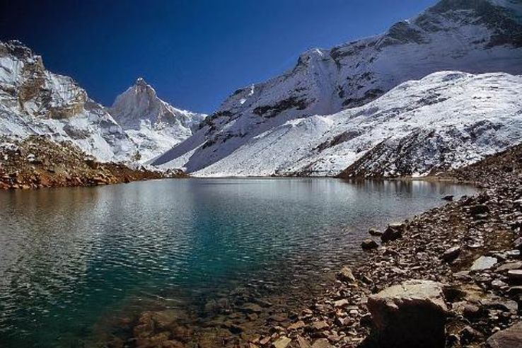
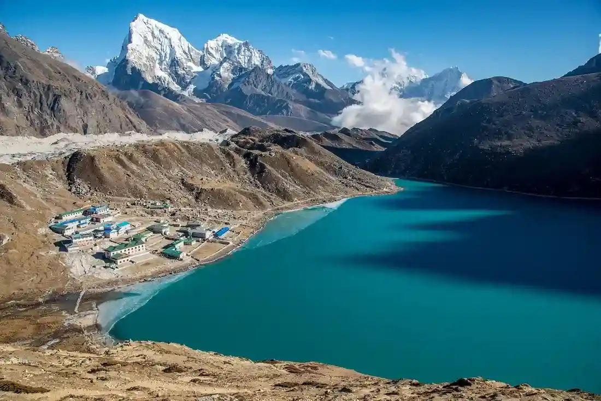
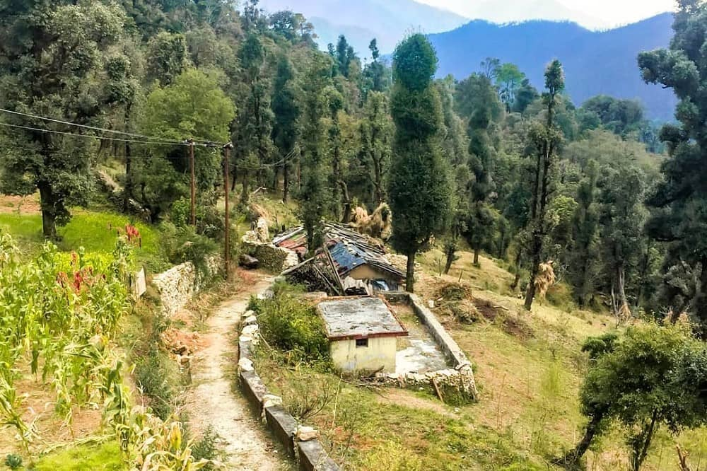
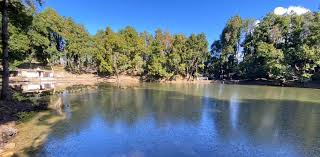

Nachiketa Tal is a serene high-altitude lake nestled in the Uttarkashi district of Uttarakhand, surrounded by dense forests of oak, pine, and deodar trees. Located at an elevation of around 2,400 meters, this peaceful lake is associated with the legendary sage Nachiketa from ancient Hindu scriptures. According to mythology, Nachiketa performed intense meditation here, seeking the ultimate truth of life and death, making this place deeply spiritual and meditative. Unlike crowded tourist spots, Nachiketa Tal offers untouched natural beauty, crystal-clear water, and an atmosphere filled with silence, purity, and calmness.
The lake can be reached via a short trek of about 3 km from Chaurangi Khal, making it a perfect destination for nature lovers and beginner trekkers. Surrounded by lush greenery and mountain air, it provides a refreshing escape from city life. The reflection of trees in the still waters of the lake creates a magical and peaceful view, ideal for photography, meditation, and relaxation. Nachiketa Tal is not just a destination, but an experience of solitude, spirituality, and connection with nature in its purest form.
March to June offers pleasant weather with greenery and comfortable trekking conditions, while September to November provides clear skies, cool air, and beautiful forest views after monsoon. Avoid peak monsoon (July–August) due to slippery trails and landslides, and winters (December–February) when the area may receive snowfall and become difficult to access.
Peaceful lakeside meditation, short forest trek from Chaurangi Khal, bird watching, nature photography, and enjoying the untouched Himalayan environment. The calm waters of Nachiketa Tal and the surrounding dense forests create a perfect setting for relaxation, spiritual reflection, and escaping the noise of city life.
Carry water, snacks, and basic essentials as facilities are limited. Wear comfortable trekking shoes for the forest trail. Visit during daylight hours for safety and better views. Maintain cleanliness and avoid littering to preserve the natural beauty. It is ideal for those seeking peace, so respect the silence and environment.
"At Nachiketa Tal, where silence speaks louder than words and the forest whispers ancient wisdom, one finds not just a destination but a journey inward — a place where the soul slows down, the mind finds clarity, and nature gently reveals the deeper truths of life."